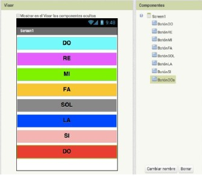

3.2. Xilófono
El xilófono es una aplicación muy sencilla que sirve para demostrar el uso de algunos de los componentes más básicos de App Inventor, así como para introducir el uso de los procedimientos como mecanismo para evitar la generación de código repetitivo.
La aplicación consiste en mostrar un conjunto de 8 botones de colores que responden a su pulsación mediante la emisión de una nota musical.
1. Crear un nuevo proyecto.
2. Añadir una nota del xilófono
- Desde la paleta de Interfaz de usuario, arrastra un Botón hasta la pantalla en el área del Visor.
- Renombra el botón a BotonDO pulsando el botón Cambiar nombre que se encuentra al pie del área de Componentes.
- Desde el área de Propiedades modifica el aspecto del botón: Ajusta el tamaño del botón modificando las propiedades de Ancho y Alto.
3. Creación de la interfaz completa. Añadir el resto de botones a la interfaz hasta obtener el aspecto final del xilófono. Separa los botones mediante disposicones horizontales.

4. Adición del componente de sonido. Descarga los archivos de sonido de este enlace Recursos xilófono
- Selecciona la categoría Medios de la Paleta y arrastra el componente Sonido al visor. Comprueba que aparece bajo la categoría de Componentes no visibles del Visor, ya que no tiene ningún tipo de representación gráfica en la interfaz.
- Pulsa ahora el botón Subir archivo… del área Medios, para proceder a la carga de los distintos archivos de audio. Repite el proceso hasta completar la carga de los 8 ficheros wav necesarios.
5. Creación de un procedimiento para la creación de sonido.
- Cambia el modo de edición pulsando el botón Bloques de la parte superior derecha de la pantalla. En este modo de definirá el comportamiento de los distintos elementos introducidos en la interfaz.
- Pulsa sobre la opción Procedimientos que encontrarás en el área de Bloques en la parte izquierda de la pantalla. De los bloques resultantes arrastra el primero hacia el visor y asígnale el nombre reproducirNota.
- Pulsa ahora sobre la ruedecilla azul que hay junto al texto como para añadir un parámetro de entrada al procedimiento. Este parámetro indicará el número de nota a reproducir. Arrastra el bloque entrada de la parte izquierda hasta encajarlo dentro del etiquetado como entradas en la parte derecha, y asígnale como nombre numero.
- Completa ahora la funcionalidad del procedimiento tal y como se describe en la figura. Observa como consiste en obtener el nombre del fichero a reproducir como la mezcla del número de nota más la extensión ”.wav”, para utilizarlo como fuente del sonido. La última instrucción es la que realmente realiza la reproducción. Ten en cuenta que:
• Los bloques poner y llamar pueden obtenerse pulsando sobre el componente Sonido1 que se encuentran en la categoría Screen1.
• Los bloques unir y “”, pertenecen a la categoría Texto.
• El bloque tomar se obtendrá pulsando sobre el componente Sonido1
6. Asignación del sonido a los botones de notas.
- Seleccionar un bloque de tipo cuando .click pulsando sobre el BotonDO y arrastrarlo al visor. Dentro de este bloque colocar otro de tipo llamar reproducirNota disponible en la categoría de Procedimientos, para después conectar un bloque de tipo numérico en el hueco disponible, con el valor 1.
- Este proceso debe repetirse para cada uno de los 8 botones disponibles en la interfaz, teniendo en cuenta que el número de nota debe ser distinto en cada caso.
7. Inicialización de los sonidos.
- La primera vez que se reproduce un sonido se produce una pequeña espera debido a que el fichero debe ser cargado en la memoria del dispositivo. Para evitarlo es posible en el instante inicial una precarga forzada de todos ellos. Esta operación es imperceptible para el usuario. Para ello, coloca un bloque de tipo cuando .Inicializar disponible en la categoría Screen1. Incluye dentro de este bloque los correspondientes a la asignación de la fuente del sonido, tal y como indica la figura.
Actividad
Indicar visualmente qué nota se está reproduciendo en cada momento cambiando la apariencia del botón correspondiente, por ejemplo, al pulsar el botón cambiar el color de fondo y al dejar de pulsar que recobre su color original.
Obra publicada con Licencia Creative Commons Reconocimiento Compartir igual 4.0